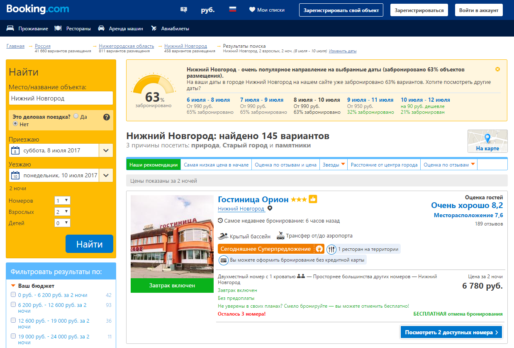
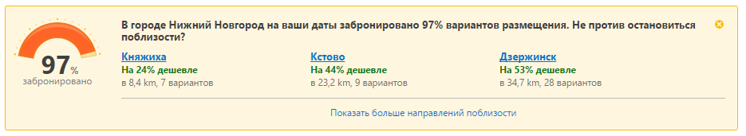
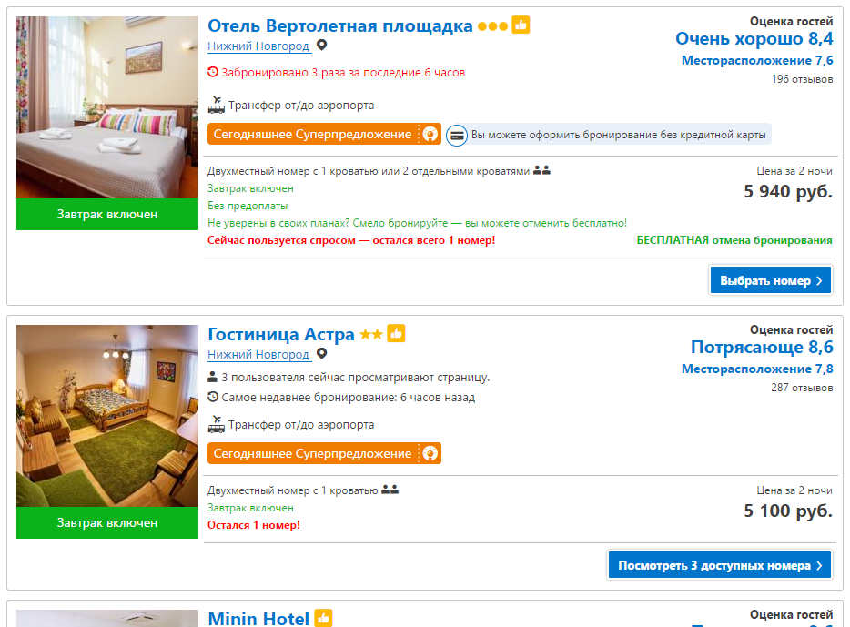
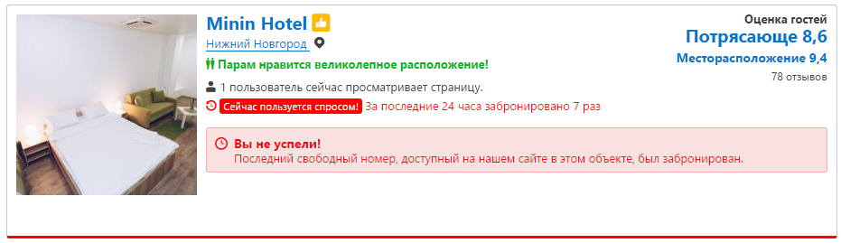
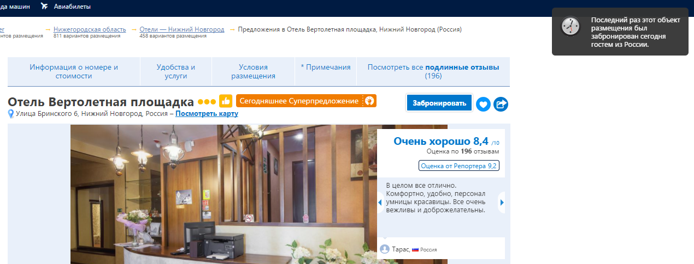
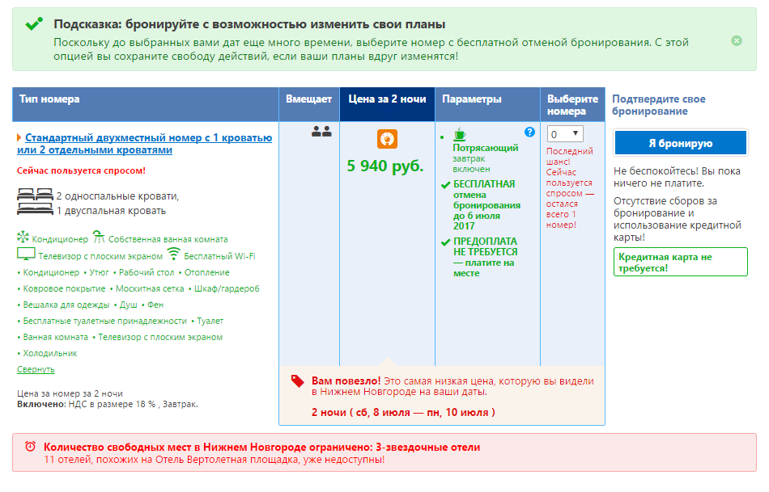
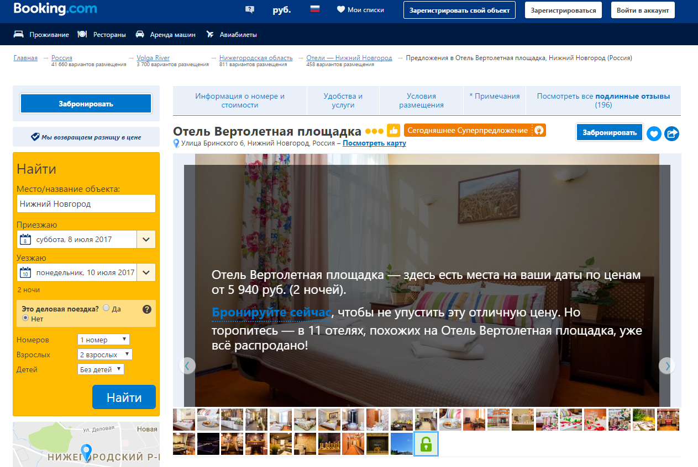

Вспомните сколько спонтанных и зачастую глупых покупок было совершено вами или вашими близкими под влиянием: «последний день распродаж», «на складе осталось 3 товара» и самое страшное «до конца акции осталось… а дальше таймер с обратным отсчётом».
Именно так работает эффект срочности в маркетинге, создавая перед пользователями иллюзорность (в основном) ограниченности предложения.
Под давлением этой иллюзии пользователь может согласиться с возможностью упущенной аналогичной выгоды из-за боязни вообще её потерять.
На рынке есть множество отраслей, располагающих к использованию данного подхода, они с ним, можно сказать, живут душа в душу уже давно. При этом зачастую пользователи воспринимают такое давление не просто без негатива, а с ощущением заботы об их интересах. К таким отраслям относятся: путешествия (авиабилеты, бронь отелей и т.п.), недвижимость (аренда и продажа), авто (покупка), развлечения (билеты на концерты, фестивали, в кино и т.п.), ритейл (крупные ритейлеры типа asos, ozon и т.п)
Рассмотрим, как это работает на примере Booking.com
Только введя необходимые вводные данные, на первой же странице в самом верху мы сразу видим предупреждение
 Далее устанавливаем дополнительные фильтры и…вуаля…. 63% меняется на 97% При этом в самих объявлениях мы видим уведомления типа «Остался всего 1 номер», «Забронировано 3 раза за 6 часов», «3 пользователя сейчас просматривают эту страницу», «сегодняшнее суперпредложение» (да-да, не просто суперпредложение, а именно сегодняшнее) и т.п
Даже зачем-то высветилось не актуальное предложение под лозунгом «Вы не успели!»
Далее переходим на страницу конкретного отеля. Спустя пару секунд видим предупреждение
Листаем страницу вниз, изучая предложение, там нас поджидают новые стимулы
Снова поднимаюсь на верх страницы и прямо на изображении меня предупреждают
В итоге мы ловим себя на том, что уже не степенно и вдумчиво оцениваем варианты и выбираем оптимальный, а стараемся успеть.
При этом с «пугающими» предупреждениями для снятия морального напряжения и, опять же, для ускорения решения соседствуют блоки типа «бесплатное бронирование», «вы можете отменить бронирование до ____», «не требуется привязка карты», «БЕЗ ПРЕДОПЛАТЫ» и т.п.
Для наглядности отметила их на верхних скриншотах другим цветом.
То есть буквально каждый свободный сантиметр пространства занят прямыми или обратными мотиваторами. Такая себе мотивация кнутом и пряником.
Многие сайты, такие, как например Ticketmaster или Цирк Дю Солей напрямую предпреждают своих пользователей о том, что если они не заршат покупку или бронирование в течение определённого времени, то их места снова попадут в открытый доступ, возможный для бронирования. Иногда даже не стесняются ставить таймер.
А вот более деликатный пример подобного стимулирования. В данном случае автодилер уведомляет сколько автомобилей осталось на складе и сколько людей уже прошли тест-драйв. Конечно, вы же должны понимать ваши шансы и число потенциальных конкурентов ☺

В некоторых случаях, таких как предметы роскоши (те же премиальные авто, например), то ограниченность предложения действует не только на боязнь упустить выгоду, но и указывает на эксклюзивность вашего предложения.
Так где же идеальный баланс между кнутом и пряником? Как не «передавить» пользователя?
Проанализируйте ваш бизнес, подумайте насколько такой подход уместен в вашей отрасли? Пользуются ли им конкуренты и как они это делают? Как ведут себя пользователи на их сайтах?
Чем вы можете обоснованно подтолкнуть пользователя скорее совершить покупку (прямые и обратные мотиваторы)?
Проанализируйте «точки отвала» на сайте. Какими фразами на них вы можете удержать пользователя? С какими барьерами он столкнулся именно в этой точке?
И в конце концов чётко составьте архитектуру размещения (так чтобы вы могли объяснить почему именно этот мотиватор расположен именно в этом месте) и проведите тесты.
Доминируй и конвертируй! Больших вам продаж!